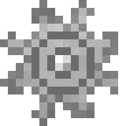

Guide: How to create a page

Work in Progress
This article is still being worked on and may not contain all information.
All version pages are based on JSON files. JSON files are used to store data. To begin creating a page, you need to make a new JSON file based on this template.
You can tag changelog entries using the following tags: <irc>, <notch>, <code>, <social>, <spec>, <recreation> and <artificial>
You can tag screenshots using the following tags: <ogscreenshot> and <remakescreenshot>
You can submit your finished version files in our discord server. A complete JSON should look something like this:
You can download it from here
Please note that you need a live server running for the sandbox to work. Here's how to set up that server:
You should edit base.json that's inside the Versions folder, and all images must be placed inside Resources/versionResources/ in order for them to load.
Empty Template
{
"shortName": "",
"fullName": "",
"releaseDate": "",
"mainImage": "",
"downloadMethod": "",
"downloadLink": "",
"versionTags": [],
"previousVersion": "",
"nextVersion": "",
"versionDescription":
"",
"additions": [
],
"changes": [
],
"fixes": [
],
"bugs": [
],
"media": [
],
"videos": [
],
"trivia": [
]
}Here's an explanation of what each thing means:
- shortName is the short name of the version. (e.g. c0.0.11a)
- fullName is the full name of the version. (e.g. Classic 0.0.11a)
- releaseDate is the release date of the version. (e.g. May 17, 2009)
- remakeUpdateDate is the date of the last update for this remake of the version (e.g. May 17, 2009). Leave empty if the version is not a remake.
- mainImage is the name of the image used in the main info box (eg. Classic_0.0.11a_Human.jpg)
- downloadMethod is either "Omni", "TMRP", "Mojang" or "None"
- downloadLink is the direct link to download the version. Leave empty if the version doesn't have a download
- versionTags can be one of the following: "tmrp", "omni", "wip", "dev", "missing", "dangerous", "save" or "extension"
- previousVersion is the short name of the previous version
- nextVersion is the short name of the next version
- versionDescription is the description of the version
- additions is the list of things added in this build (leave empty if none)
- changes is the list of things changed in this build (leave empty if none)
- fixes is the list of things fixed in this build (leave empty if none)
- bugs is the list of known bugs in this build (leave empty if none)
- media is the list of images with descriptions
- videos is the list of links to videos
- trivia is the list of facts
You can tag changelog entries using the following tags: <irc>, <notch>, <code>, <social>, <spec>, <recreation> and <artificial>
You can tag screenshots using the following tags: <ogscreenshot> and <remakescreenshot>
You can submit your finished version files in our discord server. A complete JSON should look something like this:
Complete Example (contains text from minecraft.wiki)
{
"shortName": "c0.0.11a",
"fullName": "Classic 0.0.11a",
"releaseDate": "May 17, 2009",
"remakeUpdateDate": "",
"mainImage": "Classic_0.0.11a_Human.jpg",
"downloadMethod": "TMRP",
"downloadLink": "https://github.com/nasko222/the-minecraft-recreation-project/raw/refs/heads/classic/c0.0.11a.jar",
"versionTags": ["tmrp", "wip"],
"previousVersion": "",
"nextVersion": "c0.0.12a",
"versionDescription":
"This is a description <br> Thats how you make a new line <br><br> Thats how you make 2 new lines",
"additions": [
],
"changes": [
],
"fixes": [
"Fixed an issue with start and destroy functions making the game unplayable.",
"<irc> Fixed an issue with start and destroy functions making the game unplayable.",
"<notch> Fixed an issue with start and destroy functions making the game unplayable.",
"<code> Fixed an issue with start and destroy functions making the game unplayable.",
"<social> Fixed an issue with start and destroy functions making the game unplayable.",
"<spec> Fixed an issue with start and destroy functions making the game unplayable.",
"<recreation> Fixed an issue with start and destroy functions making the game unplayable.",
"<artificial> Fixed an issue with start and destroy functions making the game unplayable."
],
"bugs": [
],
"media": [
["Some screenshot", "Classic_0.0.11a_Human.jpg"],
["<ogscreenshot> Tagged screenshot", "Classic_0.0.11a_Human.jpg"],
["<remakescreenshot> Tagged screenshot", "Classic_0.0.11a_Human.jpg"]
],
"videos": [
"https://example.com"
],
"trivia": [
]
}Sandbox
There's an available wiki sandbox so that you can see the changes you're making in real time.You can download it from here
Please note that you need a live server running for the sandbox to work. Here's how to set up that server:
- Download and Install Visual Studio Code
- Open Visual Studio code and go to File>Open Folder and choose the folder where you unzipped the downloaded zip file
- Now head over to the Extensions tab, and install Live Server by Ritwick Dey
- Once installed, click on the Go Live button in the bottom right corner of VS Code and you're done
You should edit base.json that's inside the Versions folder, and all images must be placed inside Resources/versionResources/ in order for them to load.